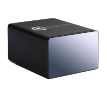
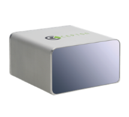

Products

HR80 Series
LEARN MORE

SORA
LEARN MORE

VISTA
LEARN MORE
Cepton Technologies, Inc. was founded in 2016 and is a leading 3D sensing solutions provider shipping LiDAR products for the automotive, industrial and mapping applications. Cepton's LiDAR technology delivers unrivaled performance and resolution at low cost to enable perception for smart machines. Based in Silicon Valley, our rapidly growing team has a wealth of experience in LiDAR engineering and manufacturing, computer vision and semiconductor. We are currently shipping our entire line comprised of four advanced LiDAR solutions and have more than 50 customers worldwide.
The consumer automobiles we drive today are loaded with onboard sensors to provide the drivers with information such as, tire pressure, real-time accurate navigation guidance, and advance safety features of lane departure warning, automatic emergency braking, and the list goes on. The next evolution of these smart sensors will be the additions of automotive LiDAR sensors to complement existing sensors to extend the range, accuracy and resolution providing a more complete and comprehensive 3D real-time perception of objects around the cars. Thus, enabling automotive manufacturers to provide systems with higher reliability and even more advanced safety features such as collision avoidance, night vision, enhanced adaptive cruise control to different levels of autonomous driving modes. The Cepton Vista LiDAR sensors is designed to be a small form factor that operates on only 9 watts of power enabling automotive designers to esthetically integrate LiDAR sensors into their existing cars’ functional designs and electrical systems. The 200 meters range to detect objects allow on board software to react and decide the next course of actions or reactions while the vehicle is traveling at speeds of 65 mph. The Vista’s angular resolution is 0.1 degree providing a high level of accuracies to delineate and detect different objects in near range or far range.
The traditional mapping and surveying industry have been transformed over the last 10 years with the invent of LiDAR sensors to provide 3D aerial mapping. These earlier LiDAR sensors are large, expensive, heavy, and deployed on large drones and or fixed wing aircraft. Cepton leverages its core technology from automotive LiDAR sensors to provide a lightweight, long range, high resolution, and cost-effective aerial LiDAR sensor for use with UAV drones to address the needs and requirements of 3D digital mapping ranging from terrain mapping, urban mapping to mapping of utility assets such as, pipelines, powerlines and various infrastructures. The Cepton SORA is lightweight at 550 grams enabling aerial systems with a lighter payload and extending flight time. The rich and dense point cloud of 120,000 point per second scans at 200 hz using two lines. These are just a few highlights of the Cepton Aerial LiDAR sensor..

The agriculture industry is not foreign to the adoption of new technologies in its quest to reduce operation costs, improve yield, and to address the ongoing reduction in available labor resources. GPS technology coupled with advance software available in our consumer daily cars today have already found its way on to farming equipment and fields throughout the world with systems such as, automated steering. The organic evolution of the tractor automated steering solution is to provide real-time 3D perception with the use of high performance, long range, and high-resolution LiDAR sensors to enable additional autonomy with real-time decision making capabilities. The Cepton Vista LiDAR sensor is the ideal LiDAR sensor to provide these enhance 3D perception capabilities with the ability to detect objects out to 200 meters. The ability to scan with 120 lines produces a rich and dense point cloud of 540,000 points per second enabling clear distinctions between crops vs furrows. In addition, high performance and high-resolution 3D LiDARs can extend longer operation time in the field without the need of sun light or artificial light required to provide illumination.

The norm of the world we live in today relies on multiple vision sensors such as, CCTV cameras and IP cameras acting as sentries guarding and watching our home, businesses, and places we frequent. With the advent of automotive LiDAR sensors and sensor fusion technologies, the possibility of blending different sources of data such as, high resolution 2D digital camera / CCTV data with 3D digital real-time perception point cloud data and detection algorithm can enable an automated process to identify potential threats, as well as escalation to the next decision process. Cepton’s extremely long range HR80T LiDAR sensor can detect objects out to 300 meters while the latest Vista LiDAR sensor can detect low reflectivity objects or people in black / dark clothing out to 200 meters. The integration of Cepton LiDAR sensors with advanced network CCTV cameras provide a reliable and long range perimeter sentry systems with the ability to detect objects day and automate the escalation and decision making process resulting in more effective and accurate at determination of potential risks and physical threats 24/7.
CEO & Co-Founder
Dr. Pei received his Ph.D. in Electric Engineering from Stanford University. Earlier in his career, he worked in technology development at KLA-Tencor, a semiconductor metrology company. Later Dr. Pei founded AEP Technology to develop advanced 3D optical instruments for scientific research. After identifying a significant market opportunity and need for high performance, low-cost LiDAR solutions, Dr. Pei co-founded Cepton Technologies, a company that provides automotive grade 3D sensing solutions to the autonomous vehicle and other related industries. Under Dr. Pei’s leadership, Cepton’s world class engineering team delivered three commercial products in less than 18 months. With its long range and high resolution LiDAR systems, Cepton Technologies is quickly becoming one of the dominant LiDAR providers.
Co-Founder & VP of Engineering
As Co-Founder and Vice President of Engineering at Cepton, Dr. McCord leads the development of high performance, low-cost imaging LiDAR systems. Prior to Cepton, McCord was Director of System Engineering, Advanced Development at KLA-Tencor, where he developed electron beam technologies for etching and imaging silicon chips, and first worked with Dr. Pei. Earlier in his career, McCord served as an Associate Professor of Electrical Engineering at Stanford University, where he and his group researched various methods of nanometer-scale silicon processing, and as a Research Staff Member at IBM Research, where he worked on development of X-ray and electron beam chip lithography. Dr. McCord earned a B.S. in Electrical Engineering from Princeton University and a PhD in Electrical Engineering from Stanford University. Dr. McCord is married with three children. When not building the latest LiDAR technology and solutions, you can find him playing ultimate frisbee and sailing.